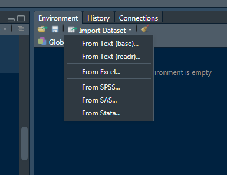

Chapter 2 R Basic
Rafe C. H. Liu / Johnson Hsieh, LastUpdate: 2018-07-10
2.1 變數與常用資料結構
- 變數 (variable)
- R 語言中變數的賦值方式可以使用，1.
<-(箭號) 以及 2.=(等號)表示。 - 根據 Google R Style Guide 建議使用
<-進行變數賦值。 - 另外，R 語言中程式的註解以
#(井號) 表示。
- R 語言中變數的賦值方式可以使用，1.
- 資料結構 (data structure)
- 資料結構為電腦中為了運算方便，儲存、組織資料的方式。
- R 語言中的資料結構除了一般程式語言常見結構外 (vector, matrix, array, list)，還有 (tibble, data.frame, data.table) 等知名結構。
- 本文著重於介紹最常用的 vector 以及 data.frame，進階教材可參考 Introduction to R。
2.1.1 向量 (vector)
- 基本類別
- R 物件最基本的單位是向量 (vector)，以 c() 表示 (Combine)，元素與元素之間逗號分隔。
- 常用基本類別 (class)，即 1.數值向量 (numeric vector)、2. 字串向量 (character vector) 以及 3. 布林向量 (logical vector)。
# numeric vector
x <- c(4.39, 2.11, 3.17)
x [1] 4.39 2.11 3.17class(x) # 可利用class(x)查詢物件的類別[1] "numeric"# character vector，以雙引號 " " 或單引號 ' ' 註記
y <- c("apple", "book", "cat")
y[1] "apple" "book" "cat" class(y)[1] "character"# logical vector，以TRUE / FALSE 註記，亦可簡化為 T / F
z <- c(TRUE, FALSE, TRUE)
z[1] TRUE FALSE TRUEclass(z)[1] "logical"- 向量的類別轉換
- 向量物件一次只能接受一種類別，若同時在一個向量中給定多種類別，R 將會依以下順序進行自動轉換：字串 > 數值 > 布林。
- 可利用以下函數自行轉換向量的類別：as.character, as.numeric, as.logical。

# 向量只容許一種類別 (字串 > 數值 > 布林)
c(1, 2, "three") # 數值被轉換成字串[1] "1" "2" "three"c(1, 2, TRUE, FALSE) # 布林值 TRUE 被轉換成1，FALSE被轉換成0[1] 1 2 1 0c(1.1, 2.4, TRUE, FALSE)[1] 1.1 2.4 1.0 0.0c("one", 2.4, TRUE) # 所有元素都被轉換成字串[1] "one" "2.4" "TRUE"# 字串轉數字
a1 <- c("89", "91", "102")
as.numeric(a1)[1] 89 91 102# 布林轉數字
a2 <- c(TRUE, TRUE, FALSE)
as.numeric(a2)[1] 1 1 0# 數字轉布林
a3 <- c(-2, -1, 0, 1, 2)
as.logical(a3)[1] TRUE TRUE FALSE TRUE TRUE# 數字轉字串
as.character(a3)[1] "-2" "-1" "0" "1" "2" - 向量物件的簡記
- 連續整數向量可以利用 : (冒號) 簡記，譬如數列 1, 2, 3 在 R 語言中可利用 1:3 簡記。
- R 中的向量具有 recycling properties，便於執行四則運算。
- Vector Arithmetic and Recycling
# basic expression of integer vector
c(1, 2, 3)[1] 1 2 3# simple expression
1:3[1] 1 2 33:1[1] 3 2 1# shorter arguments are recycled
1:3 * 2[1] 2 4 61:4 + 1:2[1] 2 4 4 6c(0.5, 1.5, 2.5, 3.5) * c(2, 1)[1] 1.0 1.5 5.0 3.5# warning (why?)
1:3 * 1:2[1] 1 4 3- 元素的命名
- 在 R 語言中，可以對向量中的每一個元素命名，或者是利用函數 names 對向量元素命名，這有助於該向量的理解。
y <- c("apple", "book", "cat")
y[1] "apple" "book" "cat" y1 <- c(A="apple", B="book", C="cat")
# 等價於
# y1 <- y
# names(y1) <- c("A", "B", "C")
y1 A B C
"apple" "book" "cat" names(y1)[1] "A" "B" "C"- 取值與排序
- 利用
[ ](中括號) 與比較運算子(>, <, >=, <=, ==, !=)、邏輯運算子 (&, |) 以及負號 (-) 進行向量的取值。此外，R 也支援利用變數的名稱 (names) 來取值。
- 利用
# 1st and 3rd elements of vector
x <- c(4.39, 2.11, 3.17)
x[c(1,3)] [1] 4.39 3.17x[c(2,3,1)][1] 2.11 3.17 4.39order(x) # 依x各元素大小排序 (由小到大)[1] 2 3 1x[order(x)][1] 2.11 3.17 4.39# remove 1st elements of vector
y <- c("apple", "book", "cat")
y[c(-1)][1] "book" "cat" # using comparison and logical operators
x > 3[1] TRUE FALSE TRUEwhich(x>3) # which indices are TRUE[1] 1 3x[which(x>3)][1] 4.39 3.17x[x > 3] # simplify expression[1] 4.39 3.17y[y!="apple"][1] "book" "cat" y1["A"] A
"apple" y1[y1=="apple"] A
"apple" names(y1)[y1 == "apple"][1] "A"- 向量元素取代與新增
- 使用
[ ]進行元素的取代與新增
- 使用
y <- c("apple", "book", "cat")
y[3] <- "car" # replace 3rd element
y[1] "apple" "book" "car" x <- c(4.39, 2.11, 3.17)
x[c(1,3)] <- 0 # replace 1st and 3rd elements to 1
x[4] <- 1.19 # add 4th element to 1.19
# 等價於 c(x, 1.19)
x[1] 0.00 2.11 0.00 1.192.1.2 資料框 (data.frame)
- 資料框、資料框架、數據框 (data.frame)
- 為向量 (vector) 的一種推廣，它可以將多個相同長度 (不一定是相同類別) 的向量合併在一起 (combine by column)。
x <- c(4.39, 2.11, 3.17, 5.43)
y <- c("apple", "book", "cat", "baby")
z <- c(TRUE, FALSE, TRUE, FALSE)
df <- data.frame(v1 = x, v2 = y, v3 = z)
df v1 v2 v3
1 4.39 apple TRUE
2 2.11 book FALSE
3 3.17 cat TRUE
4 5.43 baby FALSEstr(df) # 展示物件各欄位的屬性結構 (structure)'data.frame': 4 obs. of 3 variables:
$ v1: num 4.39 2.11 3.17 5.43
$ v2: Factor w/ 4 levels "apple","baby",..: 1 3 4 2
$ v3: logi TRUE FALSE TRUE FALSEhead(df, 3) # 展示物件前 3 筆資料 v1 v2 v3
1 4.39 apple TRUE
2 2.11 book FALSE
3 3.17 cat TRUEcolnames(df) # 展示物件的欄位名稱[1] "v1" "v2" "v3"rownames(df) # 展示物件的列名稱[1] "1" "2" "3" "4"- 取值
- 如同 vector 使用
[]取值，data.frame 利用[row, col]提取物件內容。 - 表達式為 x[i, j]，表示提取 x 物件中第i列 (ith row)、第j行 (jth column) 的值
- 也可單純使用 x[i, ] 表達第i列的向量；x[,j] 表達第j行的向量。
- 中括號中可以使用條件算子進行取值。
- 另外，可以用
$(錢號) 來提取物件的特定欄位 (column)，請試著在 df$ 之後按 tab (自動完成鍵)。
- 如同 vector 使用
df[1] # select 1st column variable v1
1 4.39
2 2.11
3 3.17
4 5.43df[, 1] # select the value of 1st column[1] 4.39 2.11 3.17 5.43df[, "v1"][1] 4.39 2.11 3.17 5.43df$v1[1] 4.39 2.11 3.17 5.43df[c("v2", "v3")] v2 v3
1 apple TRUE
2 book FALSE
3 cat TRUE
4 baby FALSEdf[2, ] # select 2nd row v1 v2 v3
2 2.11 book FALSEdf[df$v1 > 3 & z==TRUE, "v2"][1] apple cat
Levels: apple baby book cat- data.frame 的合併
- 利用 rbind (上下合併)、cbind (左右合併) 對 data.frame 進行合併
x <- data.frame(Drama=c("我的自由年代", "回到愛以前"),
TV=c("三立", "台視"))
y <- data.frame(Drama=c("我的自由年代", "回到愛以前"),
Date=c("2014-02-07", "2014-01-05"),
Vol=c(12, NA),
Rating=c(2.67, 2.58))
z <- data.frame(Drama=c("16個夏天", "妹妹"),
TV=c("公視", "台視"),
Date=c("2014-11-01", "2014-10-10"),
Vol=c(16, 7),
Rating=c(2.30, 1.30))
x Drama TV
1 我的自由年代 三立
2 回到愛以前 台視y Drama Date Vol Rating
1 我的自由年代 2014-02-07 12 2.67
2 回到愛以前 2014-01-05 NA 2.58z Drama TV Date Vol Rating
1 16個夏天 公視 2014-11-01 16 2.3
2 妹妹 台視 2014-10-10 7 1.3xy <- cbind(x, y[,-1])
rbind(xy, z) Drama TV Date Vol Rating
1 我的自由年代 三立 2014-02-07 12 2.67
2 回到愛以前 台視 2014-01-05 NA 2.58
3 16個夏天 公視 2014-11-01 16 2.30
4 妹妹 台視 2014-10-10 7 1.30# 壓縮程式碼 rbind(cbind(x, y[,-1]),z)2.1.3 類別物件 (factor)
- factor
- 當一向量變數是類別型變數 (categorical data，譬如：性別、教育水準) 時，在 R 語言中以 factor 進行定義。
# variable gender with 2 "male" entries and 3 "female" entries
gender <- c(rep("male",2), rep("female", 3))
gender[1] "male" "male" "female" "female" "female"gender <- factor(gender)
gender[1] male male female female female
Levels: female malelevels(gender)[1] "female" "male" as.numeric(gender) # 1=female, 2=male internally (alphabetically)[1] 2 2 1 1 1# change vector of labels for the levels
factor(gender, levels=c("male", "female"), labels=c("M", "F"))[1] M M F F F
Levels: M F2.1.4 陣列或矩陣 (matrix)
- matrix
- 矩陣是線性代數、數值運算中最基本的資料結構，開發演算法之基礎。
- 建立 matrix 時需提供 vector 型態之資料，並設定行數或列數，且須透過
byrow參數以指定排列順序 - data.frame 可視為 matrix 之功能延伸 (vector –> matrix –> data.frame)
matrix(1:4, nrow = 2) [,1] [,2]
[1,] 1 3
[2,] 2 4matrix(1:4, nrow = 2, byrow = TRUE) [,1] [,2]
[1,] 1 2
[2,] 3 4#取值：與 data.frame 相同
x <- matrix(1:4, nrow = 2, byrow = TRUE)
x[2, 1][1] 3#矩陣乘法 1*1+2*3, 1*2+2*4
x [,1] [,2]
[1,] 1 2
[2,] 3 4x %*% x [,1] [,2]
[1,] 7 10
[2,] 15 22#行列式，須為 row, col 數相同之對稱矩陣 1*4-2*3
det(x)[1] -2#轉換成 data.frame
as.data.frame(x) V1 V2
1 1 2
2 3 42.1.5 序列 (list)
- list
- 為 R 環境中最廣義的物件，可以將上述所有物件都包含至同一個物件下。
- 序列 (list) 的表達形式與向量類似，只是每一個元素可以是各種物件型態(vector, data.frame, list, … )。
- 基本的取值方法是
[[ ]](雙層中括號)，x[[i]] 表示list物件中第i個值。如過list物件的位置有命名，則可以用$ (錢號) 來提取物件。
L <- list(x = c(1:5), y = c("a", "b", "c"), z = df)
L$x
[1] 1 2 3 4 5
$y
[1] "a" "b" "c"
$z
v1 v2 v3
1 4.39 apple TRUE
2 2.11 book FALSE
3 3.17 cat TRUE
4 5.43 baby FALSE# teh dollar operator $ or [[]] can be used to retrieve a single element
L[[2]][1] "a" "b" "c"L$y [1] "a" "b" "c"L[["z"]] v1 v2 v3
1 4.39 apple TRUE
2 2.11 book FALSE
3 3.17 cat TRUE
4 5.43 baby FALSEL[3]$z
v1 v2 v3
1 4.39 apple TRUE
2 2.11 book FALSE
3 3.17 cat TRUE
4 5.43 baby FALSEL[c(1, 3)]$x
[1] 1 2 3 4 5
$z
v1 v2 v3
1 4.39 apple TRUE
2 2.11 book FALSE
3 3.17 cat TRUE
4 5.43 baby FALSEL[c("x", "y")]$x
[1] 1 2 3 4 5
$y
[1] "a" "b" "c"# 序列轉向量
unlist(L) x1 x2 x3 x4 x5 y1 y2 y3 z.v11 z.v12 z.v13 z.v14
"1" "2" "3" "4" "5" "a" "b" "c" "4.39" "2.11" "3.17" "5.43"
z.v21 z.v22 z.v23 z.v24 z.v31 z.v32 z.v33 z.v34
"1" "3" "4" "2" "TRUE" "FALSE" "TRUE" "FALSE" 2.1.6 特殊變數介紹
- 保留字 (Reserved word)
- 程式語言通常會事先定義的常用或具有特殊意義之變數。
- 命名變數時宜避開保留字命名，以免會出現不可預知之錯誤。
pi
- R 常用保留字
- NA, not vailable, 通常指遺漏值 (missing value)，可利用 is.na() 函數來判別
- numeric(0), length(numeric(0) = 0, 長度為0的數值型物件
- Inf, infinity, 無窮大
- NaN, not a number, 可利用 is.na() 函數來判別
NA # NA[1] NAc(1, NA, 4) + 1[1] 2 NA 5x <- c(4.39, 2.11, 3.17)
x[x>5] # numeric(0)numeric(0)100/0 # Inf[1] Inf-pi/0 #-Inf[1] -Inf0/0 # NaN[1] NaNInf-Inf # NaN[1] NaN2.2 基本運算
2.2.1 數學運算
x <- 100
y <- 400
x + y[1] 500x - y[1] -300x * y[1] 40000x / y[1] 0.25sqrt(x)[1] 10x^2[1] 10000log(x)[1] 4.605172.2.2 基礎統計
- 內建套件與資料集
- library(help = ‘stats’)
- data()
- 為避免運算結果影響內建資料集，常以新物件方式存取
head(iris) Sepal.Length Sepal.Width Petal.Length Petal.Width Species
1 5.1 3.5 1.4 0.2 setosa
2 4.9 3.0 1.4 0.2 setosa
3 4.7 3.2 1.3 0.2 setosa
4 4.6 3.1 1.5 0.2 setosa
5 5.0 3.6 1.4 0.2 setosa
6 5.4 3.9 1.7 0.4 setosa# 另存入新物件中
irisDat <- iris
# Descriptive statistics
min(irisDat$Sepal.Length)[1] 4.3max(irisDat$Sepal.Length)[1] 7.9range(irisDat$Sepal.Length)[1] 4.3 7.9sum(irisDat$Sepal.Length)[1] 876.5mean(irisDat$Sepal.Length)[1] 5.843333median(irisDat$Sepal.Length)[1] 5.8quantile(irisDat$Sepal.Length) 0% 25% 50% 75% 100%
4.3 5.1 5.8 6.4 7.9 summary(irisDat$Sepal.Length) Min. 1st Qu. Median Mean 3rd Qu. Max.
4.300 5.100 5.800 5.843 6.400 7.900 # Data trasformation
irisDat$log.Sepal.Length <- log(irisDat$Sepal.Length)
head(irisDat) Sepal.Length Sepal.Width Petal.Length Petal.Width Species log.Sepal.Length
1 5.1 3.5 1.4 0.2 setosa 1.629241
2 4.9 3.0 1.4 0.2 setosa 1.589235
3 4.7 3.2 1.3 0.2 setosa 1.547563
4 4.6 3.1 1.5 0.2 setosa 1.526056
5 5.0 3.6 1.4 0.2 setosa 1.609438
6 5.4 3.9 1.7 0.4 setosa 1.686399# Deviation 離差
irisDat$dev <- irisDat$Sepal.Length - mean(irisDat$Sepal.Length)
irisDat$dev.sq <- irisDat$dev^2
head(irisDat) Sepal.Length Sepal.Width Petal.Length Petal.Width Species log.Sepal.Length dev dev.sq
1 5.1 3.5 1.4 0.2 setosa 1.629241 -0.7433333 0.5525444
2 4.9 3.0 1.4 0.2 setosa 1.589235 -0.9433333 0.8898778
3 4.7 3.2 1.3 0.2 setosa 1.547563 -1.1433333 1.3072111
4 4.6 3.1 1.5 0.2 setosa 1.526056 -1.2433333 1.5458778
5 5.0 3.6 1.4 0.2 setosa 1.609438 -0.8433333 0.7112111
6 5.4 3.9 1.7 0.4 setosa 1.686399 -0.4433333 0.1965444# Variance 變異數
sum(irisDat$dev.sq)/(nrow(irisDat)-1)[1] 0.6856935var(irisDat$Sepal.Length)[1] 0.6856935# Standard deviation 標準差
sqrt(sum(irisDat$dev.sq)/(nrow(irisDat)-1))[1] 0.8280661sqrt(var(irisDat$Sepal.Length))[1] 0.8280661sd(irisDat$Sepal.Length)[1] 0.8280661# Linear Regression 簡單線性迴歸
lm(Petal.Width ~ Petal.Length, data=irisDat)
Call:
lm(formula = Petal.Width ~ Petal.Length, data = irisDat)
Coefficients:
(Intercept) Petal.Length
-0.3631 0.4158 summary(lm(Petal.Width ~ Petal.Length, data=irisDat))
Call:
lm(formula = Petal.Width ~ Petal.Length, data = irisDat)
Residuals:
Min 1Q Median 3Q Max
-0.56515 -0.12358 -0.01898 0.13288 0.64272
Coefficients:
Estimate Std. Error t value Pr(>|t|)
(Intercept) -0.363076 0.039762 -9.131 4.7e-16 ***
Petal.Length 0.415755 0.009582 43.387 < 2e-16 ***
---
Signif. codes: 0 '***' 0.001 '**' 0.01 '*' 0.05 '.' 0.1 ' ' 1
Residual standard error: 0.2065 on 148 degrees of freedom
Multiple R-squared: 0.9271, Adjusted R-squared: 0.9266
F-statistic: 1882 on 1 and 148 DF, p-value: < 2.2e-162.2.3 文字處理
- String Manipulation
- 處理 “string” 型態之方法集合
- 正規表達式 (regex) 補充教材：
r1 <- "Hello"
class(r1)[1] "character"# 單字字元個數 nchar(x)
nchar(r1)[1] 5# 單字分割 substr(x, start=n1, stop=n2)
substr(r1, start = 1, stop = 3)[1] "Hel"# 單字變更大小寫 toupper/tolower(x)
r1 <- toupper(r1)
r1[1] "HELLO"r1 <- tolower(r1)
r1[1] "hello"# 單字結合成字串 paste(…, sep="")
r2 <- "world"
paste(r1, r2, sep = ".")[1] "hello.world"paste(r1, r2, sep = " ")[1] "hello world"# 字串拆解 strsplit(x, split)
r3 <- paste(r1, r2, sep = " ")
r3[1] "hello world"r4 <- strsplit(r3, split = " ")
r4[[1]]
[1] "hello" "world"r4[[1]][2][1] "world"# 字串取代 gsub(pattern, replacement, x)
r3[1] "hello world"gsub(pattern = "ll", replacement = "oo", x = r3)[1] "heooo world"# 規則運算式 grepl(pattern,x)
r5 <- list("hello", "world")
grep("l", r5)[1] 1 2grepl("ll", r5)[1] TRUE FALSE2.3 基礎 I/O
2.3.1 Input/Output
- 從 R console中輸入資料：
- 利用
readline輸入一行字串 ("character") - 利用
scan輸入一組數值型態的向量 ("numeric")scan()只能接受數值資料，並以向量方式儲存- 按一次 enter 鍵可以輸入下一筆數字，連按兩次 enter 結束輸入。
- 利用
x <- readline()
"I am a R user!"
x
x <- scan()
1
2
class(x)
x- 輸出至檔案
- 必先確認工作目錄：
getwd(),setwd() - 先用
file建立檔案連結(file connection) - 再使用
cat函數將資料向量輸出至該檔案
- 必先確認工作目錄：
output <- file('output.txt')
cat(1:100,sep='\t',file=output)
close(output)- 讀取/輸出多行 text lines 形式的來源
- 當資料屬於非表格形式或非結構化時，可使用
readLines讀取檔案 - 利用
writeLines將對應的結果輸出
- 當資料屬於非表格形式或非結構化時，可使用
output <- file('output.txt')
writeLines(as.character(1:12),con=output)
input <- readLines(output)
print(input)- 讀取/輸出 表格形式的資料
- 利用
read.table讀檔，利用write.table輸出檔案
- 利用
# a typical table format data
head(iris)
# write to a file ################################
write.table(iris, file = 'iris.csv', sep = ',')
# or, more concisely:
write.csv(iris, file = 'iris.csv')
# read a file ################################
data <- read.table(file = 'iris.csv', header = TRUE, sep = ',')
# or, more concisely:
data <- read.csv(file = 'iris.csv')
# if you don't want to type in the path
data <- read.table(file = file.choose(), sep = ',')2.3.2 TroubleShooting
- 讀檔之前，先觀察檔案
- 編碼通常都是
UTF8或BIG5- Linux, Darwin: “UTF-8”
- Windows: “BIG-5”
- 編碼通常都是
- library function
- 依照不同檔案格式選擇，通常會有相對應套件或函式
- Quick-R: Importing Data
readLines,read.csv….
- 如果你想在 windows 環境下讀取/寫入含有中文字以 utf8 編碼的檔案，有幾種建議做法
# write to a file ################################
# Solution A - 先從 big5 轉 utf8 再儲存
raw2 <- iconv(raw, from = "BIG-5", to = "UTF-8")
write.csv(file = "ubikeweatherutf8.csv", x = raw2)
# Solution B - 利用函數內建參數進行轉碼
write.csv(file = "ubikeweatherutf8.csv", x = raw2, fileEncoding = "UTF-8")
# read a file ################################
dat1 <- read.csv("data/ubike-sample-data-utf8.csv", fileEncoding="utf8")- 當已萬念俱灰

2.4 控制流程與自訂函數
R 語言的程式控制流程與其他程式語言並無不同，僅有書寫上的些許差異。
- 控制流程學習提示
- 避免死記，儘量以口語、翻譯的方式理解較容易上手
- 善用註解適時加以註記
- 排版很重要，縮排雖無意義 (python 4-space indention rules)，但看起來舒服，IDE 會自動縮排
- 迴圈 -> 條件控制 -> 自訂函數，逐層分解
- 常用控制流程包含
- 迴圈：
for (var in seq) expr- seq: ex.
1:10,1:nrow(x),c(4,5,6,7)(會從第一個位置開始取值) - expr: 使用
{}標記程式執行範圍
- seq: ex.
- 條件控制：
if (cond) expr1 else expr2 else .....- cond: 判斷條件一定須返回 TRUE/FALSE，ex.
a == b,a %in% b,is.na(a) - 精簡版函式：
ifelse(cond, TRUE, FALSE)
- cond: 判斷條件一定須返回 TRUE/FALSE，ex.
- 其餘控制流程：Quick-R: Control Flow
- 迴圈：
- 自訂函數 (
f(x))- 可視為一個物件
myfun <- function(args)，取用直接呼叫函式名myfun(args) - 取名儘量口語，可增加程式可讀性，若有相同命名，則後引用函數則會覆蓋前函數
- arguments 即為函式內變數預設名稱 (local variable)
return(obj)，僅能返回單一物件，多物件可使用list串接
- 可視為一個物件
# 指定 i (為一個計數器)，i 從 1 跑到 10
for (i in 1:10){
print(i)
}
# 加入控制流程
for (i in 1:10){
if (i %% 2 == 0){
print('even')
} else {
print('odds')
}
}
# 改寫為自訂函數
# 翻譯： print "OddsEven of a given seqEnd" num that defined...
OddsEven <- function(seqEnd){
for (i in 1:seqEnd){
if (i %% 2 == 0){
print(paste(i, 'Even', sep = ' - '))
} else {
print(paste(i, 'Odds', sep = ' - '))
}
}
}
OddsEven(20)
Quiz: 請嘗試撰寫一函式，判斷輸入數值之餘數 %%:
# WRITE YOUR CODE2.5 綜合演練
2.5.1 First Step to Data Analysis
# a typical table format data
head(iris)
# [TRY] head(iris, 20)
tail(iris)
# Dimensions
dim(iris)
nrow(iris)
length(iris)
# Column Names
colnames(iris)
# Data Thinking: 看資料欄位說故事
str(iris)
summary(iris)
# slicing
iris[4,] # 第 4 列
iris[,2] # 第 2 欄
iris[4,2]
iris[4,"Sepal.Width"]
Quiz: 請嘗試比較兩程式碼者有何不同:
iris[c(2:4),]
iris[c(2,4),]
# WRITE YOUR CODE2.5.2 Conditional slicing
which(iris$Species == "versicolor")
head(iris[which(iris$Species == "versicolor"),])
Quiz: 請嘗試找出 “versicolor”, Petal.Length > 4 的資料
# WRITE YOUR CODE2.5.3 Write/Read file
# Write to CSV file
write.csv(iris, file = 'iris.csv')
write.csv(iris, file = 'iris.csv', row.names = FALSE)
# Read a CSV file
data <- read.csv(file = 'iris.csv', header = TRUE, stringsAsFactors = FALSE)
Rafe C.H. Liu (劉佳欣)
Data Thinking, Machine Learning & E-commerce expert
Contact Info | Linkedin Profile
Data Thinking, Machine Learning & E-commerce expert
Contact Info | Linkedin Profile